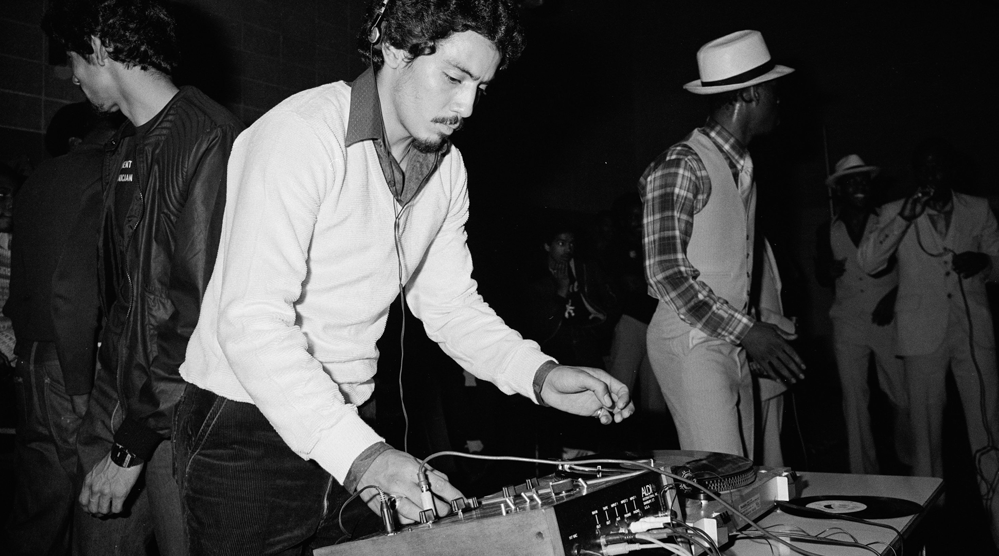
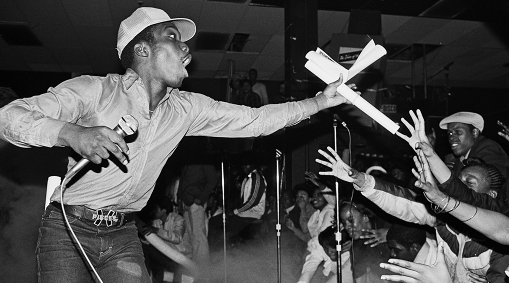
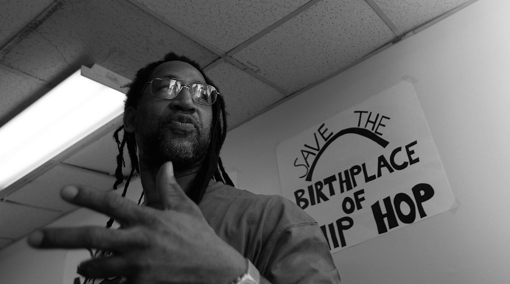

SEDGWICK
AVENUE
Today, hip-hop is one of the most influential genres in the history of music, and remains of the most popular genres today. This incredibly well-known genre of music had very humble beginnings, stemming not from a flashy nightclub, but a low-income apartment building in the South Bronx. On August 11th, 1973, a 16-year-old boy going by the name
DJ Kool Herc threw a party in his apartment building at 1520 Sedgwick Avenue. At that party, DJ Kool Herc would lay the very foundation for hip-hop, one of the most influential and popular musical genres today. At that party, DJ Kool Herc revolutionized music by taking an entirely new approach to how a song could be made.
BREAK THE
RHYTHM
DJ Kool Herc had noticed at parties when Disc Jockeys were playing music, that there was a certain part of the song, the percussion break, where people liked to get out and dance. On August 11th, 1973, DJ Kool Herc made musical history by taking the percussive break of multiple songs and splicing them together so that dancers had a
longer time to dance. This method of mixing songs had a distinctive sound that inspired new forms of dance, most notably, breakdancing. Breakdancers are called break-boys and break-girls, which is often shortened to b-boys and b-girls. All of this terminology was invented by DJ Kool Herc during the early days of hip-hop.

SPINNING
DISC JOCKEY
The term Disc Jockey
originated from the early days of radio, but when hip-hop emerged it took on a whole new meaning. DJ Kool Herc mixed and spliced music together to create entirely new songs using the best samples and beats he could find. He wasn’t just playing music, he was making it. Many DJ’s became inspired
by Kool Herc’s approach, like DJ Charlie Chase, Grandmaster Flash and Grand Wizzard Theodore. A specific type of record mixing called a Merry-Go-Round
set the foundation for hip-hop mixing, and was first ever used at the DJ Kool Herc’s first block party, which involved splicing together the various breaks from multiple different songs.

MASTER OF
CEREMONIES
At parties in the 1970’s, the Master of Ceremonies, or MC, was in charge of hyping up the crowd at block parties. DJ Kool Herc took a whole new approach to being an MC at his August 11th party, when he decided to add to the music he was playing by shouting rhymes over the microphone, like This is the joint! Herc beat on the point.
This
rhyming technique would hugely influence the development of rap and hip hop, influencing early rappers and rap groups like Afrika Bambaataa and Warp 9 as the genre first emerged. Certain phrases of DJ Kool Herc’s would remain heavily referenced in hop for decades, such as, To the beat, y'all!
and You don't stop!

A LANDMARK
AT RISK
1520 Sedgwick Avenue is a hugely important place in the development of hip hop. But more importantly, 1520 Sedgwick Avenue is a housing complex for working class families, and the parties at this apartment building allowed for a cultural revolution from a group of people often oppressed and overshadowed. However, this building is
at risk of being developed into luxury rentals unless it is recognized as a historical landmark. If 1520 Sedgwick Avenue can become a landmark, the cultural and social integrity of this building can be saved. By signing the petition below, we can get 1520 Sedgwick Avenue recognized and save the birthplace of hip-hop.